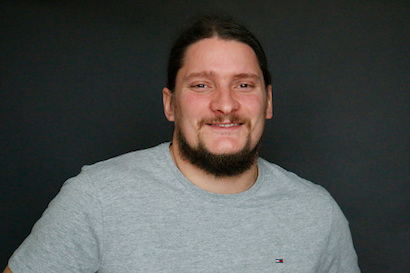

Es kommen immer mehr Tickets
Immer mehr Bugs
Qualität lässt nach - Kesselflickerei
Das macht einfach keinen Bock mehr
“Every day for us something new
Open mind for a different view
And nothing else matters”
1991
Das macht Bock
Das ganze Leben wird einfacher
Es spart 1/3 der Zeit - das macht 2 Tage in der Woche
Du kannst deinem Code Vertrauen das beruhigt dich
“Cos money making is a wonderful thing
Money making is a wonderful thing”
feat. Maxim - Carmen Queasy - 2000
Mehr Builds raushauen bedeutet mehr Tasks abzurechnen
Qualität der Software steigt permanent
Es nimmt nervige Prozesse aus der Arbeit
Change-Fail-Rate sinkt und das bringt sehr viel Zeit
Nicht auf der Stelle treten
Ticket Berg abgraben
Schnellere Abrechnung
Viel Zeit bekommen - Wettbewerbsvorteil
Kein Bottleneck für Deployment
Das können auch PMs ausführen
Keine Know How Hürde für das Deployment
Neue Entwickler sind viel schneller auf der Bahn
“They didn't win because they build shitty phones faster,
they did win because they build quality phones”
Kreative Arbeit ist ohne Spaß nicht zu bewältigen
Leidenschaft für das Projekt entwickeln
In den Flow kommen und Spaß haben
Die Arbeit nicht mit nach Hause nehmen
Die acht stressigsten Jobs der IT-Branche - Platz 1: Web-Entwickler - computerwoche.de
The Taboo Of Burnout - Jeremy Kratz
An unreasonable workload (32 percent) and too much overtime - forbes.com
Jeder dritte Berufstätige arbeitet am Limit und fühlt sich stark erschöpft oder gar ausgebrannt - forbes.com
Andreas Mautz
GitLab / Docker / Rancher

Roland Golla
Codeception und Tools
Daniel Siepmann
TYPO3 Extensions